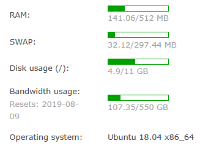

THis is how I start my own blog.
Cause
Getting to know about server running linux since 2016, my impression on the VPS(Virtual Private Server) is just like a toy. I used to run some C code demo online as well as the shadowsocks stuff. This VPS once served as an online compiler. Around mid 2017, friends introduced me about really cool things I could do with an online server e.g. web server, netdisc, mail server etc. I started to focus on this field. Since I didn’t have much time back then (the first and second year in the college was so busy o(╥﹏╥)o ) I just had a little taste like docker and code backup.
When it came to the 2019, my third year in the college,I finally got some free time to have some fun with my baby servers. Now that I am going to build my own web pages and web storage, some preworks need to be done first.
My VPS
As shown below, the VPS I use is from BandwagonHost with single core running buntu18.04.2LTS

Back that time, it was lucky to purchase this dessert VPS with $18.4 a year. If you check up with BandwagonHost’s official webpage, they ambitiously ask at least $49.99 a year for a 20GB storage 2 cores VPS(which is not friendly to novice). People used to pick up the steal in early time.
Do some configuration, buy a domain and resolve it with SSL certificate. Now the money for the early stage is spent. I start to deploy the web servcie components: First, the LAMP stack（Linux+Apache+MySQL+PHP). Then, according to my need, I apply the combination of Hexo+GitHub+node to configure my own blog. The comment system I choose is valine. Last, pick up a theme: Next as a temporary solution. I might modify it in the future.
Just for my command of linux system, I free the owncloud(a personal online storage solution) from the docker. Here comes my journey to the VPS exploration.
My little goal
建站的目的仅仅是想分享一些知识和所见所闻给更多的人。平常习惯了随手baidu,google,stackoerflow，渐渐的感觉到网络上的很多资源，信息其实都不是很考究，有时候跟着教程一步步走下来都有可能出现各种bug。每次找bug，找指令，翻帮助手册，都要花去不少的时间。所以想通过blog这样的方式，每次学会一点，就记录一点，给自己留个备忘录，也能帮到有需要的人。
博文主体还是以中文为主，方便随手记录一些东西。如果后期有空的话 会考虑多出一个英文双语版本，这样说不定未来工作求职等会比较方便。